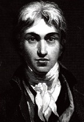

Romantik akımın en büyük İngiliz ressamı, Joseph Mallord William Turner (1775-1851), doğanın gücünün tasvirleri ve etkileyici kır manzaraları ile bilinir.

Turner, şimdi Londra’nın bir parçası olan Chelsea’de doğdu. Bir berber olan babası, oğlunun sanatsal eğilimlerini hemen fark etmişti. 1789’da on dört yaşındayken Turner, saygın Kraliyet Sanat Akademisi’ne girdi. İlk eseri, sonraki sene orada sergilendi. 1790’lar boyunca ağırlıklı olarak suluboya resimler yaptı. 1796’da Denizdeki Balıkçılar adlı ilk yağlı boya resmini sergiledi.
Turner, 1804’te Harley Caddesi’ndeki kendi galerisini açtı, ama akademide de görünmeye devam etti. 1808’den 1837’e kadar neredeyse otuz yıl, perspektif üzerine de ders verdi.
Hayatı boyunca Turner, hem İngiltere’de hem de yurtdışında pek çok kez seyahat etti. Galler, Yorkshire ve Lake District bölgelerini gezdikten sonra İsviçre’ye gitti. Sonra 1802-1803 yıllarında Louvre’da resim çalışmak üzere Fransa’ya gitti. Seyahatleri sırasında Turner, Titian, Canaletto ve Claude Lorrain gibi çeşitli eski ustaların tarzlarında resim yapmayı öğrendi. Sonrasında 1819’da İtalya’ya yaptığı gezinin, ışık ve renk kullanımında derin bir etkisi oldu. 1822 yılıyla beraber Turner, ülkesinde de şöhret kazandı. İngiliz Kralı IV. George, Trafalgar Muharebesi resmini yapması için sipariş verdi.
İngiliz romantik şiirindeki doğal olayların tasvirlerinden esinlenen Turner, doğayı hürmet ve heyecan ile resmetti. Çoğu resmine, genellikle kendi yazdıklarından olmak üzere şiir mısraları da dâhil etti. Lord Byron, Sir Walter Scott ve Samuel Rogers’in eserleri için de illüstrasyonlar hazırladı.
Kraliyet Akademisi’nde ders vermesine rağmen, Turner hayatı boyunca evrensel ölçüde takdir edilmedi. Sanatta kabul edilebilir olanın sınırlarını genişletmekle eleştirilen Turner, 1843’te ilk kez basılan, kır manzarası resimleri üzerine olan ünlü kitabı Modern Ressamlar’da kendisini savunan sanat eleştirmeni John Ruskin’den destek gördü.
Bugün Turner, izlenimcilik ve soyut dışavurumculuk gibi modern akımların önemli bir öncüsü olarak görülür. Londra’daki Tate Müzesi’nin özel bir bölümü, onun eserlerine tahsis edilmiştir. 1984’te Turner Ödülü, önemli modern sanatçıların başarılarını takdir etmek üzere oluşturuldu.
EK BİLGİ:
1. 1840’ta Turner, birçok uzmanın en iyi eseri olarak gördüğü “Köle Gemisi” (veya “Ölüleri ve Can Çekişenleri Gemiden Denize Fırlatan Köle Tacirleri. Tayfun Geliyor.”) adlı resmi yaptı. Resim, Thomas Clarkson’un “Köle Ticaretinin Terk Edilmesinin Tarihi”nde (1804) raporlanan gerçek bir olaya dayanmaktadır. Bir gemi kaptanı, gemi güvertesinde ölenlerin değil sadece denizde kaybolan kölelerin parasının karşılanacağını fark ettiği zaman hasta ve ölmekte olan köleleri okyanusa dökmüştü.